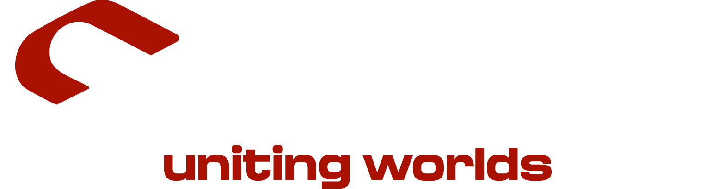

Objetivo
Facilitar el acceso a contenido cultural turco para usuarios de habla hispana, integrando una experiencia móvil clara, intuitiva y visualmente coherente.
Proyecto destacado
Diseño de aplicación móvil para facilitar el acceso a contenido cultural turco en español.


Título académico
Este proyecto presenta el diseño y desarrollo de una aplicación móvil llamada Saray, orientada a fortalecer los vínculos culturales entre Turquía y Latinoamérica. La aplicación propone una experiencia digital estructurada, accesible y visualmente atractiva para usuarios hispanohablantes interesados en la cultura turca.
Resumen
This research presents the design and development of a mobile application named Saray, aimed at strengthening cultural ties between Turkey and Latin America. In a global context where mobile technologies are rapidly transforming access to information, this project emerges as a digital solution that facilitates access to Turkish cultural content for Spanish-speaking users in a structured, accessible, and visually appealing manner.
A qualitative research method was applied using focus group technique to determine the technological habits, cultural interests, and expectations regarding mobile interface design of Latin American participants. Live streaming features were envisioned as an innovative component to connect users with real-time cultural events in Turkey.
The results emphasize the importance of combining user-centered design principles, digital accessibility, and cultural sensitivity in mobile application development. Saray stands out not only as a tool for accessing Turkish culture but also as a replicable model for digital initiatives that promote intercultural dialogue.
Facilitar el acceso a contenido cultural turco para usuarios de habla hispana, integrando una experiencia móvil clara, intuitiva y visualmente coherente.
Diseño centrado en el usuario, accesibilidad digital, sensibilidad cultural y estructura de contenidos adaptada a las necesidades de usuarios latinoamericanos.
React Native, JavaScript, MongoDB, diseño de interfaces móviles, estructura de datos y prototipado visual.
Galería
Imágenes del diseño, pantallas de autenticación, estructura de datos y desarrollo técnico de la aplicación Saray.


Video
Aquí puedes colocar un video demostrativo de la aplicación cuando lo tengas listo. Mientras tanto, esta sección puede quedar preparada para cumplir con la estructura multimedia del proyecto.